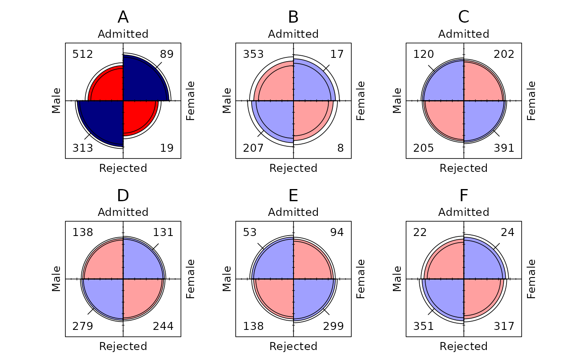

theme_fourfold() is a minimal theme for geom_fourfold() that gives
plots the plain look of vcd::fourfold(): a white panel without axes or
gridlines, facet labels without boxes, centered titles, and compact spacing
between panels. It also sets the text size, font, and line width.
Arguments
- base_size
Base font size in points.
- base_family
Base font family. The default,
"", uses the graphics device's default family.- ...
Additional arguments passed to
ggplot2::theme(). They are applied after the fourfold defaults.
Details
base_size and base_family control all text, including the category
labels and cell counts drawn by geom_fourfold(). These grow with the size
of each panel, so larger plots get larger labels, but never shrink below
five-sixths of base_size (10 points by default). Additional theme elements
passed through ... are applied last and therefore override the defaults.
The theme sets no aspect.ratio. The display stays round, and the panels
square by default, because geom_fourfold() adds a coordinate system with
ratio = 1 (see the Coordinate systems section of geom_fourfold()).
Passing aspect.ratio through ... fixes the panel's shape and overrides
that ratio, so circles become ellipses when the ranges of the x and y
axes differ, for example when a missing value keeps a place on one axis.
Therefore, it is recommended to leave aspect.ratio unset.
This theme uses ggplot2's theme-derived geom defaults and requires ggplot2 4.0.0 or later.
Examples
ucb <- as.data.frame(UCBAdmissions)
ggplot2::ggplot(
ucb,
ggplot2::aes(x = Gender, y = Admit, weight = Freq)
) +
geom_fourfold() +
ggplot2::facet_wrap(ggplot2::vars(Dept), ncol = 3) +
theme_fourfold(base_size = 12)
